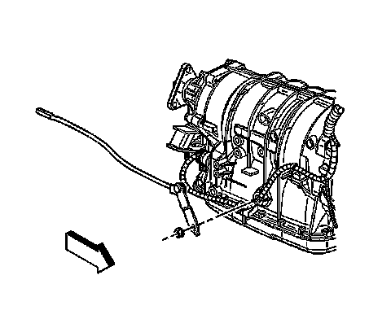
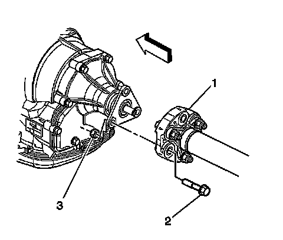
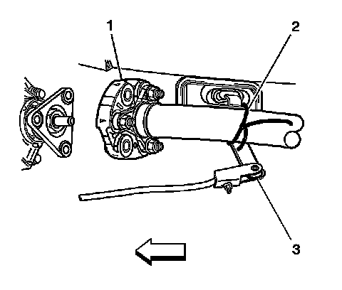
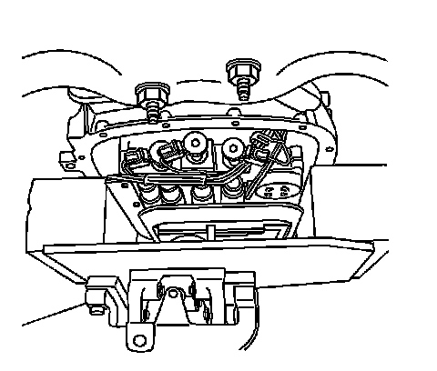
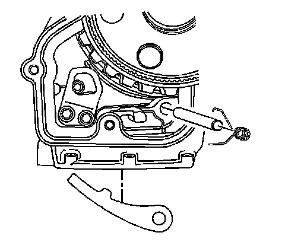
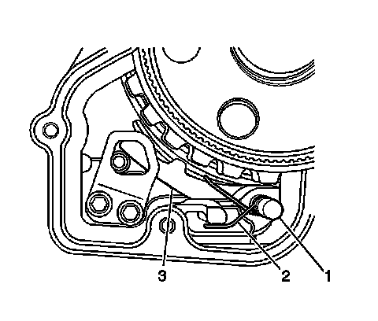

5L40-E/5L50-E - Automatic Transmission
Parking Pawl Replacement
Removal Procedure
1. Raise and support the vehicle. Refer to Lifting and Jacking the Vehicle (Service and Repair) .

2. Remove the shaft nut from the transmission manual shift.
3. Disconnect the shift linkage from the transmission.
4. Place the transmission in neutral by rotating the transmission shift shaft clockwise 2 clicks.
5. Remove the exhaust system. Refer to Exhaust System Replacement (Service and Repair) .

6. Disconnect the propeller shaft coupler (1) from the transmission flange. Refer to Rear Propeller Shaft Replacement (RWD) (Rear Propeller Shaft Replacement (RWD)) .
7. Push the front propeller shaft toward the rear of the vehicle in order to release the propeller shaft coupler (1) from the transmission flange.

8. Secure the front propeller shaft (1) to the shift control lever (3) with a piece of mechanics wire (2).
9. Remove the transmission fluid pan. Refer to Automatic Transmission Fluid and Filter Replacement (Removal and Replacement) .

10. Using a transmission jack positioned under the transmission pan area, support the transmission case on both sides with the 2 similar wood blocks to prevent the transmission internal components from contacting the transmission jack.
11. Remove the transmission support. Refer to Transmission Support Replacement (Transmission Support Replacement) .
12. Remove the extension housing. Refer to Case Extension and Gasket Replacement (5L40-E/5L50-E - Automatic Transmission) .

13. Remove the parking pawl spring.
14. Remove the parking pawl pivot pin.
15. Remove the parking pawl.
16. Inspect the following components:
* The parking pawl tooth for chipping or wear
* The parking pawl spring for over expansion
* The pivot pin for scoring and excessive wear
Installation Procedure

1. Install the parking pawl (3).
2. Install the pivot pin (1).
3. Install the parking pawl spring (2). The straight end of the spring locates against the case and the hooked end locates over the parking pawl.
4. Install the extension housing. Refer to Case Extension and Gasket Replacement (5L40-E/5L50-E - Automatic Transmission) .
5. Install the transmission support. Refer to Transmission Support Replacement (Transmission Support Replacement) .
6. Remove the transmission jack.
7. Install the transmission fluid pan. Refer to Automatic Transmission Fluid and Filter Replacement (Removal and Replacement) .
8. Remove the mechanics wire (2) securing the front propeller shaft (1) to the shift control lever (3).
9. Install the propeller shaft coupler (1) to the transmission flange. Refer to Rear Propeller Shaft Replacement (RWD) (Rear Propeller Shaft Replacement (RWD)) .
10. Install the exhaust system. Refer to Exhaust System Replacement (Service and Repair) .
11. Place the transmission in the park position by rotating the shift shaft fully counterclockwise.
12. Connect the shift linkage to the transmission.
Notice: Refer to Fastener Notice (Fastener Notice) .
13. Install the transmission manual shift shaft nut.
Tighten the nut to 9 N.m (80 lb in).
14. Fill the transmission to the proper level. Refer to Transmission Fluid Check (Transmission Fluid Check) .
15. Lower the vehicle.